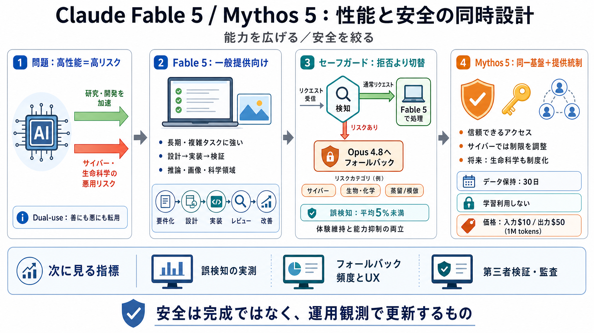

Claude Mythos (Fable 5) Is Here - YouTube
Claude Fable 5 (Mythos) Is Here: Claude’s Most Capable AI Model Explained Code And Create 28100 subscribers 1 likes 22 v…

Claude Fable 5 (Mythos) Is Here: Claude’s Most Capable AI Model Explained Code And Create 28100 subscribers 1 likes 22 v…
# Anthropic just released Claude Fable 5 a Mythos-class model for general use, with safety classifiers that fall back to…
[](https://platform.claude.com/docs/en/home). For workloads that need the highest available capability, see [Claude Fabl…
# Claude Fable 5: Anthropic's Most Powerful AI Model. Claude Fable 5 is the most powerful artificial intelligence model …
[](https://www.helpnetsecurity.com/ "Help Net Security - Daily information security news with a focus on enterprise secu…